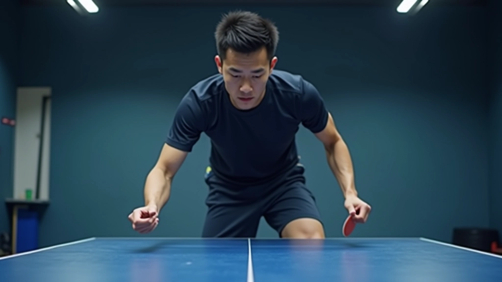
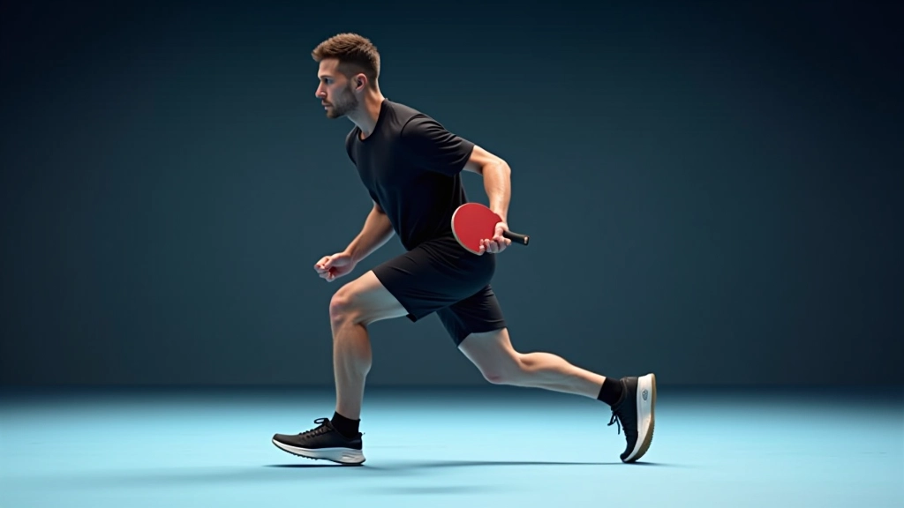
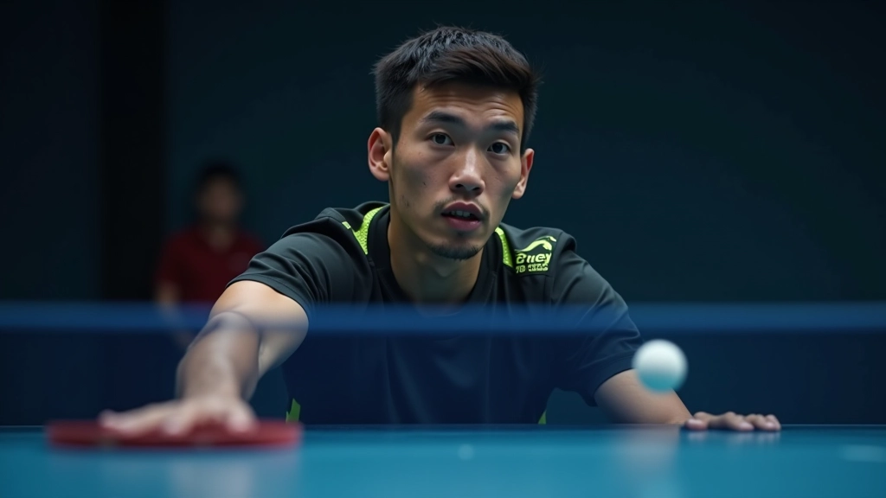

أساسيات الهجوم المضاد: البداية الصحيحة
شرح مفصل لأساسيات الهجوم المضاد وكيفية تطبيقها من البداية. تعلم الوضعية الصحيحة والمبادئ الأساسية التي يحتاجها كل لاعب.
اكتشف كيف يحسّن اللاعبون المحترفون توقيتهم وحركتهم. ثلاث مبادئ أساسية تغيّر طريقة لعبك تماماً وتجعلك أكثر فعالية في الملعب.

الكثير من اللاعبين يركزون على قوة الضربة فقط. لكن الحقيقة أن التوقيت والحركة الصحيحة هي ما تفصل بين لاعب عادي وآخر محترف. عندما تتقن هذه المبادئ الثلاثة، ستلاحظ فرقاً حقيقياً في أدائك خلال أسابيع قليلة.
التوقيت يعني معرفة اللحظة المثالية لضرب الكرة — لا مبكراً جداً ولا متأخراً جداً. الحركة الصحيحة تعني وضع جسدك في المكان المناسب قبل وصول الكرة. معاً، يشكلان أساس أي هجوم مضاد فعّال.

قراءة الكرة مبكراً تعني متابعة حركتها من لحظة ترك يد الخصم لها. لا تنتظر حتى تقترب جداً. اللاعبون الجيدون يبدأون حركتهم عندما تكون الكرة لا تزال بعيدة — حوالي 1.5 متر من الشبكة.
هذا يعطيك وقتاً إضافياً لتحضير جسدك. يمكنك ضبط خطواتك، تعديل موقع قدميك، والاستعداد للضربة بهدوء. المحترفون يقرأون دوران الكرة وارتفاعها وسرعتها — كل هذا قبل أن تصل إليهم.
نصيحة عملية: في التمرينات، ركّز على متابعة الكرة من يد الخصم. لا تنظر إلى مضربك. هذه العادة ستحسّن قراءتك للكرة بشكل كبير خلال 2-3 أسابيع.
هذا المقال يقدم معلومات تعليمية حول تقنيات تنس الطاولة. النتائج تختلف من لاعب لآخر حسب المستوى والخبرة والممارسة المنتظمة. يُنصح بالتدرب تحت إشراف مدرب مؤهل للحصول على أفضل النتائج وتجنب الإصابات.

الحركة المتوازنة لا تعني الركض بسرعة. يتعلق الأمر بخطوات صغيرة منتظمة تجعلك جاهزاً للتحرك في أي اتجاه. اللاعبون المحترفون لا يقفون ساكنين — هم دائماً في حركة طفيفة.
الخطوة الأساسية تكون من كلا القدمين معاً. عندما تقترب الكرة، تتحرك بخطوات جانبية صغيرة لوضع جسدك بزاوية 45 درجة من الطاولة. هذا يعطيك نطاقاً أوسع للضربة ويحسّن توازنك.
قفة الاستعداد: قدماك متباعدتان بعرض الكتفين
خطوات جانبية صغيرة عندما تقترب الكرة
وضع جسدك بزاوية 45 درجة من الطاولة
هذا هو الجزء الأصعب والأكثر أهمية. التوقيت المثالي يعني ضرب الكرة في أعلى نقطة قبل أن تنزل كثيراً. في الهجوم المضاد، تريد ضرب الكرة وهي تنحدر قليلاً — ليس في قمتها تماماً.
اللاعبون الناشئون غالباً ما يضربون الكرة متأخراً جداً، عندما تكون قد نزلت بالفعل. هذا يقلل من قوتك والتحكم فيك. الممارسة المنتظمة هي المفتاح — تدرب على نفس الكرة مراراً حتى تصبح قراءة التوقيت عادة عند عضلاتك.
الفرق بين توقيت صحيح وخاطئ
لتطوير التوقيت بممارسة منتظمة
الموضع المثالي من الطاولة

قراءة الكرة مبكراً، الحركة المتوازنة، وتوقيت الضربة المثالي — هذه الثلاثة مبادئ تعمل معاً. لا يمكنك تطبيق واحد منهم بمعزل عن الآخر. عندما تتدرب، ركّز على كل واحد على حدة، ثم ادمجهم معاً تدريجياً.
ابدأ بتمرينات بسيطة — اطلب من مدربك أو زميلك أن يرسل لك نفس الكرة مراراً. ركّز على موضع جسدك وتوقيت ضربتك. بعد أسابيع قليلة، ستصبح هذه الحركات طبيعية تماماً، وستشعر بالفرق الحقيقي في مستوى لعبك.
هل تريد تعميق معرفتك أكثر؟
اقرأ أساسيات الهجوم المضاد
فريق التحرير والمراجعة
يكتبها فريق أكاديمية تنس الطاولة التحريري، متخصص في شرح تقنيات الهجوم المضاد بطريقة عملية وسهلة الفهم. نركز على التفاصيل الحقيقية التي تحدث فرقاً في الملعب.
تعمّق أكثر في تقنيات الهجوم المضاد
شرح مفصل لأساسيات الهجوم المضاد وكيفية تطبيقها من البداية. تعلم الوضعية الصحيحة والمبادئ الأساسية التي يحتاجها كل لاعب.

تقنيات متقدمة للهجوم المضاد على أنواع مختلفة من الكرات. اتعلم كيفية التكيف بسرعة مع ارتفاعات الكرة المختلفة.

كيفية تطبيق تقنيات الهجوم المضاد تحت الضغط. استراتيجيات للفوز بالنقاط الحرجة والتحكم في المباراة.